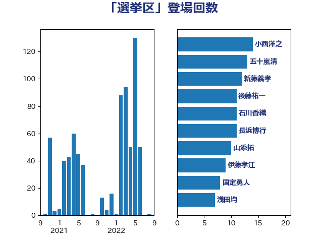

単語「選挙区」

| 小西洋之 | 立憲民主党 | 14 回 |
| 五十嵐清 | 自由民主党 | 13 回 |
| 新藤義孝 | 自由民主党 | 12 回 |
| 後藤祐一 | 立憲民主党 | 11 回 |
| 石川香織 | 立憲民主党 | 11 回 |
| 長浜博行 | 無所属 | 11 回 |
| 山添拓 | 日本共産党 | 10 回 |
| 伊藤孝江 | 公明党 | 9 回 |
| 国定勇人 | 自由民主党 | 8 回 |
| 浅田均 | 日本維新の会 | 7 回 |
| 井林辰憲 | 自由民主党 | 6 回 |
| 務台俊介 | 自由民主党 | 6 回 |
| 古川俊治 | 自由民主党 | 6 回 |
| 坂本哲志 | 自由民主党 | 6 回 |
| 松木けんこう | 立憲民主党 | 6 回 |
| 清水貴之 | 日本維新の会 | 6 回 |
| 渡辺創 | 立憲民主党 | 6 回 |
| 磯崎仁彦 | 自由民主党 | 6 回 |
| 篠原孝 | 立憲民主党 | 6 回 |
| 舞立昇治 | 自由民主党 | 6 回 |
| 西野太亮 | 自由民主党 | 6 回 |
| 道下大樹 | 立憲民主党 | 6 回 |
| 金子恭之 | 自由民主党 | 6 回 |
| 太栄志 | 立憲民主党 | 5 回 |
| 奥野総一郎 | 立憲民主党 | 5 回 |
| 山東昭子 | 自由民主党 | 5 回 |
| 斎藤アレックス | 国民民主党 | 5 回 |
| 津島淳 | 自由民主党 | 5 回 |
| 神谷裕 | 立憲民主党 | 5 回 |
| 芳賀道也 | 国民民主党 | 5 回 |
| 西田実仁 | 公明党 | 5 回 |
| 足立康史 | 日本維新の会 | 5 回 |
| 長妻昭 | 立憲民主党 | 5 回 |
| 上月良祐 | 自由民主党 | 4 回 |
| 中野洋昌 | 公明党 | 4 回 |
| 大西健介 | 立憲民主党 | 4 回 |
| 山本剛正 | 日本維新の会 | 4 回 |
| 岬麻紀 | 日本維新の会 | 4 回 |
| 本田太郎 | 自由民主党 | 4 回 |
| 池畑浩太朗 | 日本維新の会 | 4 回 |
| 田嶋要 | 立憲民主党 | 4 回 |
| 白石洋一 | 立憲民主党 | 4 回 |
| 福島伸享 | 無所属 | 4 回 |
| 船田元 | 自由民主党 | 4 回 |
| 落合貴之 | 立憲民主党 | 4 回 |
| 辻元清美 | 立憲民主党 | 4 回 |
| 金子俊平 | 自由民主党 | 4 回 |
| 階猛 | 立憲民主党 | 4 回 |
| 高木毅 | 自由民主党 | 4 回 |
| 高野光二郎 | 自由民主党 | 4 回 |
| 中島克仁 | 立憲民主党 | 3 回 |
| 中西祐介 | 自由民主党 | 3 回 |
| 堀井巌 | 自由民主党 | 3 回 |
| 山谷えり子 | 自由民主党 | 3 回 |
| 島尻安伊子 | 自由民主党 | 3 回 |
| 平沼正二郎 | 自由民主党 | 3 回 |
| 後藤茂之 | 自由民主党 | 3 回 |
| 打越さく良 | 立憲民主党 | 3 回 |
| 新垣邦男 | 立憲民主党 | 3 回 |
| 杉本和巳 | 日本維新の会 | 3 回 |
| 東徹 | 日本維新の会 | 3 回 |
| 武田良太 | 自由民主党 | 3 回 |
| 浦野靖人 | 日本維新の会 | 3 回 |
| 渡辺周 | 立憲民主党 | 3 回 |
| 石井準一 | 自由民主党 | 3 回 |
| 神田潤一 | 自由民主党 | 3 回 |
| 福山哲郎 | 立憲民主党 | 3 回 |
| 笹川博義 | 自由民主党 | 3 回 |
| 菅直人 | 立憲民主党 | 3 回 |
| 谷公一 | 自由民主党 | 3 回 |
| 赤羽一嘉 | 公明党 | 3 回 |
| 高木かおり | 日本維新の会 | 3 回 |
| たがや亮 | れいわ新選組 | 2 回 |
| 上杉謙太郎 | 自由民主党 | 2 回 |
| 上田英俊 | 自由民主党 | 2 回 |
| 中野英幸 | 自由民主党 | 2 回 |
| 仁木博文 | 無所属 | 2 回 |
| 住吉寛紀 | 日本維新の会 | 2 回 |
| 前原誠司 | 国民民主党 | 2 回 |
| 北側一雄 | 公明党 | 2 回 |
| 北神圭朗 | 無所属 | 2 回 |
| 古川元久 | 国民民主党 | 2 回 |
| 城井崇 | 立憲民主党 | 2 回 |
| 塩川鉄也 | 日本共産党 | 2 回 |
| 宮内秀樹 | 自由民主党 | 2 回 |
| 宮本徹 | 日本共産党 | 2 回 |
| 小寺裕雄 | 自由民主党 | 2 回 |
| 小熊慎司 | 立憲民主党 | 2 回 |
| 岡本あき子 | 立憲民主党 | 2 回 |
| 平林晃 | 公明党 | 2 回 |
| 朝日健太郎 | 自由民主党 | 2 回 |
| 梶山弘志 | 自由民主党 | 2 回 |
| 森山浩行 | 立憲民主党 | 2 回 |
| 森田俊和 | 立憲民主党 | 2 回 |
| 浜田靖一 | 自由民主党 | 2 回 |
| 石原宏高 | 自由民主党 | 2 回 |
| 石原正敬 | 自由民主党 | 2 回 |
| 篠原豪 | 立憲民主党 | 2 回 |
| 若宮健嗣 | 自由民主党 | 2 回 |
| 荒井優 | 立憲民主党 | 2 回 |
| 菅義偉 | 自由民主党 | 2 回 |
| 萩生田光一 | 自由民主党 | 2 回 |
| 西村康稔 | 自由民主党 | 2 回 |
| 西銘恒三郎 | 自由民主党 | 2 回 |
| 谷川とむ | 自由民主党 | 2 回 |
| 遠藤良太 | 日本維新の会 | 2 回 |
| 金村龍那 | 日本維新の会 | 2 回 |
| 鈴木英敬 | 自由民主党 | 2 回 |
| 青柳仁士 | 日本維新の会 | 2 回 |
| 下村博文 | 自由民主党 | 1 回 |
| 下野六太 | 公明党 | 1 回 |
| 井上英孝 | 日本維新の会 | 1 回 |
| 井上貴博 | 自由民主党 | 1 回 |
| 井野俊郎 | 自由民主党 | 1 回 |
| 伊東信久 | 日本維新の会 | 1 回 |
| 伊藤渉 | 公明党 | 1 回 |
| 原口一博 | 立憲民主党 | 1 回 |
| 吉川元 | 立憲民主党 | 1 回 |
| 吉川赳 | 無所属 | 1 回 |
| 吉田はるみ | 立憲民主党 | 1 回 |
| 吉田統彦 | 立憲民主党 | 1 回 |
| 國重徹 | 公明党 | 1 回 |
| 土田慎 | 自由民主党 | 1 回 |
| 坂井学 | 自由民主党 | 1 回 |
| 堀井学 | 自由民主党 | 1 回 |
| 堀場幸子 | 日本維新の会 | 1 回 |
| 塩谷立 | 自由民主党 | 1 回 |
| 大串博志 | 立憲民主党 | 1 回 |
| 大塚耕平 | 国民民主党 | 1 回 |
| 小宮山泰子 | 立憲民主党 | 1 回 |
| 小山展弘 | 立憲民主党 | 1 回 |
| 小泉進次郎 | 自由民主党 | 1 回 |
| 小渕優子 | 自由民主党 | 1 回 |
| 小野泰輔 | 日本維新の会 | 1 回 |
| 山口俊一 | 自由民主党 | 1 回 |
| 山口晋 | 自由民主党 | 1 回 |
| 山崎正恭 | 公明党 | 1 回 |
| 山田俊男 | 自由民主党 | 1 回 |
| 岩屋毅 | 自由民主党 | 1 回 |
| 岸田文雄 | 自由民主党 | 1 回 |
| 川田龍平 | 立憲民主党 | 1 回 |
| 平井卓也 | 自由民主党 | 1 回 |
| 平口洋 | 自由民主党 | 1 回 |
| 平沢勝栄 | 自由民主党 | 1 回 |
| 有村治子 | 自由民主党 | 1 回 |
| 木村次郎 | 自由民主党 | 1 回 |
| 末次精一 | 立憲民主党 | 1 回 |
| 杉尾秀哉 | 立憲民主党 | 1 回 |
| 松沢成文 | 日本維新の会 | 1 回 |
| 林芳正 | 自由民主党 | 1 回 |
| 枝野幸男 | 立憲民主党 | 1 回 |
| 柴田巧 | 日本維新の会 | 1 回 |
| 梅村みずほ | 日本維新の会 | 1 回 |
| 梅谷守 | 立憲民主党 | 1 回 |
| 櫻田義孝 | 自由民主党 | 1 回 |
| 武村展英 | 自由民主党 | 1 回 |
| 沢田良 | 日本維新の会 | 1 回 |
| 浅野哲 | 国民民主党 | 1 回 |
| 深澤陽一 | 自由民主党 | 1 回 |
| 源馬謙太郎 | 立憲民主党 | 1 回 |
| 熊田裕通 | 自由民主党 | 1 回 |
| 牧原秀樹 | 自由民主党 | 1 回 |
| 玄葉光一郎 | 立憲民主党 | 1 回 |
| 玉木雄一郎 | 国民民主党 | 1 回 |
| 田村智子 | 日本共産党 | 1 回 |
| 盛山正仁 | 自由民主党 | 1 回 |
| 石井章 | 日本維新の会 | 1 回 |
| 福島みずほ | 社会民主党 | 1 回 |
| 空本誠喜 | 日本維新の会 | 1 回 |
| 細田健一 | 自由民主党 | 1 回 |
| 細田博之 | 自由民主党 | 1 回 |
| 美延映夫 | 日本維新の会 | 1 回 |
| 若林健太 | 自由民主党 | 1 回 |
| 藤原崇 | 自由民主党 | 1 回 |
| 西岡秀子 | 国民民主党 | 1 回 |
| 赤嶺政賢 | 日本共産党 | 1 回 |
| 赤木正幸 | 日本維新の会 | 1 回 |
| 赤池誠章 | 自由民主党 | 1 回 |
| 近藤和也 | 立憲民主党 | 1 回 |
| 逢沢一郎 | 自由民主党 | 1 回 |
| 重徳和彦 | 立憲民主党 | 1 回 |
| 鈴木憲和 | 自由民主党 | 1 回 |
| 鈴木敦 | 国民民主党 | 1 回 |
| 長友慎治 | 国民民主党 | 1 回 |
| 関芳弘 | 自由民主党 | 1 回 |
| 阿部知子 | 立憲民主党 | 1 回 |
| 青柳陽一郎 | 立憲民主党 | 1 回 |
| 高木啓 | 自由民主党 | 1 回 |
| 高橋千鶴子 | 日本共産党 | 1 回 |
| 高良鉄美 | 無所属 | 1 回 |
| 麻生太郎 | 自由民主党 | 1 回 |